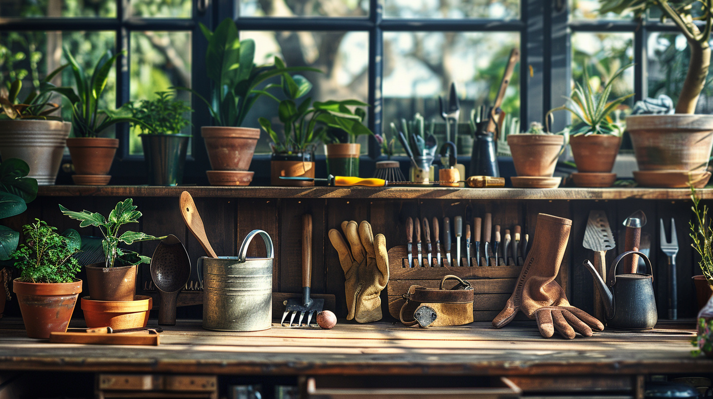

Outillage jardin Guadeloupe : équiper et entretenir
Tondeuses, débroussailleuses, engrais, terreaux, systèmes d'arrosage : l'outillage jardin Guadeloupe de Jardiland réunit tout pour entretenir efficacement votre jardin tropical. Dans nos magasins de Baie-Mahault et des Abymes, nos équipes vous orientent vers le bon matériel.
Sous nos tropiques, le matériel doit encaisser l'humidité, les alizés et le sel marin. Tout pousse vite, tout pousse fort : on ne choisit pas son outil au hasard. Le bon équipement vous fait gagner du temps et dure des années.

Trois rayons pour entretenir votre jardin
De l'outillage à l'arrosage, en passant par les engrais et les traitements, tout est pensé pour le climat antillais.
Outillage de jardin
Du sécateur au motoculteur, en passant par les tondeuses, débroussailleuses et taille-haies : un équipement manuel, électrique ou thermique dimensionné selon la taille de votre terrain et la nature de votre végétation.
Engrais, terreaux et traitements
Terreaux adaptés, paillages, engrais organiques et minéraux, traitements bio : de quoi nourrir un sol vivant et garder des plantes en bonne santé toute l'année.
Arrosage et récupération d'eau
Tuyaux, programmateurs, goutte-à-goutte et cuves de récupération d'eau de pluie : des solutions concrètes pour arroser efficacement et économiser l'eau, un enjeu réel en Guadeloupe.
La différence Jardiland
Acheter un outil, c'est facile. Bien le choisir et le faire durer, c'est une autre histoire. Voici ce que nous apportons.
Du conseil avant l'achat
Tondeuse à essence ou électrique ? Engrais minéral ou organique ? Nos équipes vous orientent en fonction de votre terrain et de vos besoins réels, sans pousser au sur-équipement inutile.
Un service après-vente sur place
Pas besoin d'envoyer votre matériel sur le continent : nous nous occupons de la mise en route et de l'entretien sur place. Nos marques pros, comme Kärcher, Hozelock ou Ribimex, sont choisies pour durer sous un usage tropical exigeant.
Vos questions, nos réponses
Quel matériel prévoir pour le carême ?
Pendant la saison sèche, l'arrosage devient prioritaire : programmateurs, goutte-à-goutte et récupérateurs d'eau prennent tout leur sens. C'est aussi la période pour vidanger les réservoirs thermiques et entretenir les lames.
Comment entretenir son matériel sous climat tropical ?
L'humidité est l'ennemi numéro un. Stockez les outils dans un local ventilé, huilez les lames métalliques après usage et videz les réservoirs en saison cyclonique. Un outil entretenu dure trois fois plus longtemps.
Où trouver un magasin de jardinage en Guadeloupe ?
Nos deux magasins, à Baie-Mahault et aux Abymes, réunissent tout l'outillage, les engrais et l'arrosage sous un même toit. Le meilleur magasin de jardinage en Guadeloupe, c'est celui où l'on vous conseille vraiment.
Venez nous rendre visite en magasin
Baie-Mahault ou Les Abymes : nos 25 conseillers vous attendent six jours sur sept.
Voir nos magasins